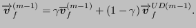

Next: Mass conservation equation Up: Incompressible flow Previous: Transient terms Contents
Equation (548) is still valid. For incompressible fluids the Gamma method is applied which results in (Equation (521)):
|  | (704) |
Therefore, one ends up with:
| (705) |